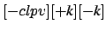
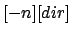
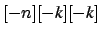

CI066 - Oficina de Programação
Notas de Aula # 02
2º semestre 2003
Prof. Armando Luiz N. Delgado
Existem duas classes de documentação em Linux.
A primeira classe contém documentação referente a esclarecimentos
gerais e de instalação dos diversos programas existentes em uma
distribuição Linux. Esta documentação está, geralmente, no diretório
/usr/doc. Geralmente são mais úteis aos administradores.
A outra classe, a mais importante, contém as páginas de manuais
on-line do UNIX. Esta documentação é acessível através do
comando man e contém a descrição e forma de uso dos diversos
programas existentes em uma distribuição Unix/Linux.
O manual on-line se organiza em 9 seções (numeradas de 1 a
9). Cada seção agrupa manuais referentes a um assunto específico. As
seções são:
- Programas executáveis e comandos shell
- Chamadas de Sistema - System calls - funções para
programação, disponibilizadas pelo kernel.
- Bibliotecas do Sistema - Library calls - funções
diversas para programação.
- Arquivos Especiais - geralmente encontrados no diretório /dev.
- Formatos de arquivos e convenções (e.g. /etc/passwd)
- Jogos
- Macros e convenções gerais (e.g. man(7), groff(7)).
- Comandos para Administração do Sistema - geralmente utilizados
apenas pelo Administrador do Sistema root
- Rotinas do Kernel [Não é padrão]
Eventualmente, pode existir uma seção adicional de novas páginas,
denominada Seção n.
Os principais comandos para acesso às páginas de manuais
on-line são:
- man acessa uma página de manual específica.
ci066@dupond:~$ man man
...
ci066@dupond:~$ man 1 man
...
ci066@dupond:~$ man 7 man
...
ci066@dupond:~$ man 7 ascii
...
ci066@dupond:~$ man 3 string
...
O comportamento default do comando man é consultar
as páginas da Seção 1 - Programas e Comandos (e.g.,
man ls = man 1 ls).
ATENÇÃO: Daqui para frente, será utilizada a notação
comando(seção) para se referir ao manual on-line do
comando que está na seção indicada.
Por exemplo, se for pedido para se usar ls(1), o
aluno deverá usar o comando man ls para descobrir sobre a
forma de uso e opções do comando ls para resolver um
determinado problema.
- whatis busca por palavra chave em todo o conjunto de
manuais.
ci066@dupond:~$ whatis date
date (1) - print or set the system date and time
- apropos busca por string em todo o conjunto de
manuais.
ci066@dupond:~$ apropos date
...
autoreconf (1) - update configure scripts
autoreconf2.13 (1) - update configure scripts
autoupdate (1) - updates an old configure.in file to version 2
autoupdate2.13 (1) - updates an old configure.in file to version 2
cal (1) - displays a calendar and the date of easter
catman (8) - create or update the pre-formatted manual pages
chpasswd (8) - update password file in batch
date (1) - print or set the system date and time
ddate (1) - converts Gregorian dates to Discordian dates
doupdate (3ncurses) - refresh curses windows and lines
...
- Arquivos: notação, nomes (nomes com espaços, caracteres
acentuados, arquivos ocultos, substituição de metacaracteres, aspas,
apóstrofos e barra invertida, etc.)
- Diretórios
- caminhos absolutos e relativos
- Notação: , ,
 e $HOME
e $HOME
- Árvore de diretórios Linux (/usr, /bin, /etc, ...)
- Impressão de arquivos: lpr, impressora default
- Manipulação de diretórios: cd, pwd, mkdir, rmdir, ls
- Navegação rotativa em diretórios: pushd(1), popd(1) e dirs(1)
- dirs

- Sem opções, mostra o conteúdo da pilha dos
diretórios. Os elementos da pilha são mostrados em uma única linha,
separados por espaços. Diretórios são acrescentados à pilha com o
comando pushd; o comando popd remove elementos da
pilha.
- +k
- Exibe o k-ésimo elemento da lista exibida
por dirs sem argumentos, contando da esquerda e iniciando
com 0 (zero).
- -k
- Exibe o k-ésimo elemento da lista exibida
por dirs sem argumentos, contando da direita e iniciando
com 0 (zero).
- -c
- Limpa a pilha de diretórios.
- -l
- Produz uma lista em que caracteres especiais como ~
são expandidos.
- -p
- Mostra a pilha de diretórios com um elemento por linha.
- -v
- Mostra a pilha de diretórios com um elemento por linha,
sendo que no início de cada linha é indicado o índice do elemento
na pilha.
- pushd

-
- pushd

- Acrescenta um diretório ao topo da pilha de diretórios, ou
``rotaciona'' a pilha fazendo que o diretório no topo da pilha se torne
o diretório corrente. Sem argumentos, troca os dois diretórios do topo
da pilha. Os argumentos podem ser:
- +k
- Rotaciona a pilha de forma que o k-ésimo
diretório (contando a partir da esquerda da lista mostrada por
dirs, iniciando em zero) fique no topo da pilha.
- -k
- Rotaciona a pilha de forma que o k-ésimo
diretório (contando a partir da direita da lista mostrada por
dirs, iniciando em zero) fique no topo da pilha.
- -n
- Manipula apenas a pilha, não efetuando a troca de diretório
corrente.
- dir
- Acrescenta dir ao topo da pilha de diretórios,
tornando-o o diretório corrente.
Se o comando pushd é bem sucedido, um comando dirs
é executado em seguida, mostrando assim o estado da pilha de
diretórios.
- popd
- Remove elementos da pilha de diretórios. Sem
argumentos, remove o elemento do topo da pilha e executa cd
para o novo elemento no topo da pilha. Os argumentos podem ser:
- +k
- Remove o késimo elemento contando a
partir da esquerda da lista mostrada por dirs, iniciando
em zero. Por exemplo: popd +0 remove o primeiro elemento,
popd +1 o segundo.
- +k
- Remove o késimo elemento contando a
partir da direita da lista mostrada por dirs, iniciando em
zero. Por exemplo: popd -0 remove o último diretório na
pilha, popd -1 o anterior ao último.
- -n
- Manipula apenas a pilha, não efetuando a troca de diretório
corrente.
Se o comando popd é bem sucedido, um comando dirs é
executado em seguida, mostrando assim o estado da pilha de
diretórios.
- Manipulação de arquivos: cp, mv, rm
- Caracteres especiais:
- Copiar arquivos em disquete nos Laboratórios do DInf: ftp,
FAQ sobre disquete
Trazer disquetes para a proxima aula
- 1
-
PET Informática.
Linux Básico.
UFPR, Outubro 2002.
URL http://pet.inf.ufpr.br/ daniel/LinuxBasico.pdf.
Armando Luiz Nicolini Delgado
2003-10-21